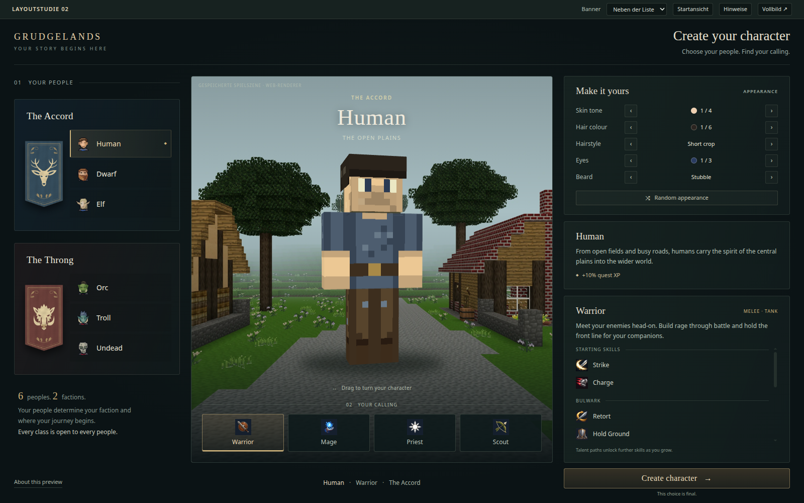
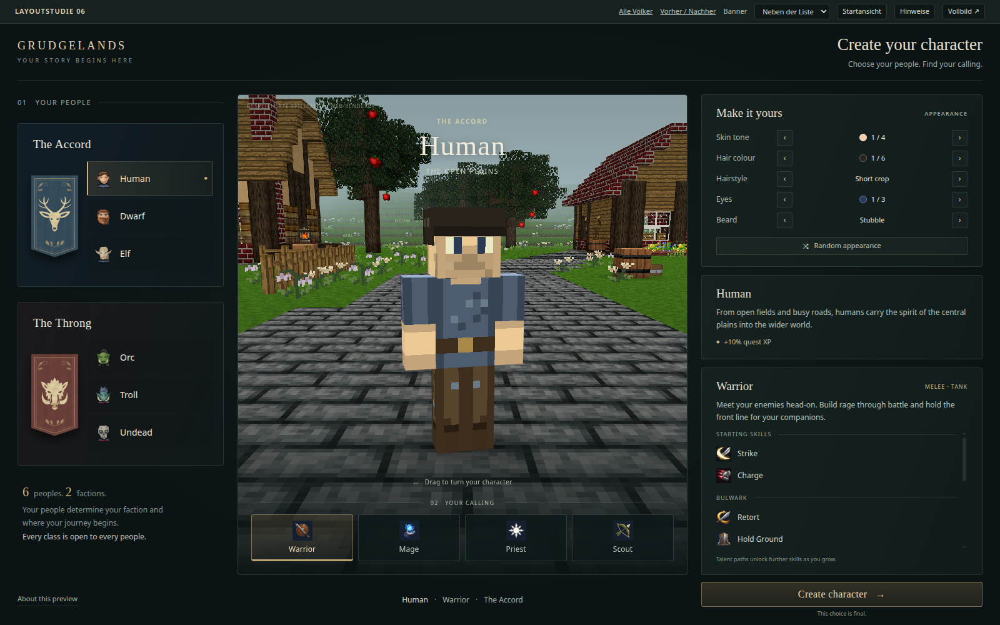

Ein Charakter im Vordergrund, keine Riesenfigur
Links der bisherige Stand, rechts die neue Menschen-Perspektive. Die aktuelle Fassung enthält außerdem die überarbeitete Kulisse mit scharfen Pixeltexturen und gepflasterter Straße. Kamera, Körpermaßstab und Bildausschnitt sind jetzt aufeinander abgestimmt; ein Bodenschatten verankert die Füße.


VORHER · Unabhängige KamerasNACHHER · Gemeinsame Perspektive
Der Vergleich zeigt Human. Die gleiche Perspektivkorrektur ist inzwischen bei allen sechs Völkern umgesetzt; ihre Wegbeläge sind ebenfalls geprüft. Beide Vergleichsbilder zeigen dieselben Aussehensoptionen und dieselbe Fenstergröße.